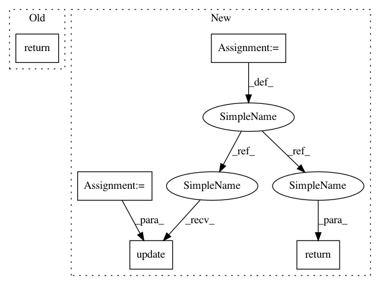

7290c19623ca29e0affa8068488487132f2b8ed3,rlkit/samplers/data_collector.py,GoalConditionedPathCollector,get_diagnostics,#GoalConditionedPathCollector#,154
Before Change
self._epoch_paths = deque(maxlen=self._max_num_epoch_paths_saved)
def get_diagnostics(self):
return OrderedDict([
("num steps total", self._num_steps_total),
("num paths total", self._num_paths_total),
])
def get_snapshot(self):
return dict(
env=self._env,
After Change
self._epoch_paths = deque(maxlen=self._max_num_epoch_paths_saved)
def get_diagnostics(self):
path_lens = [len(path["actions"]) for path in self._epoch_paths]
stats = OrderedDict([
("num steps total", self._num_steps_total),
("num paths total", self._num_paths_total),
])
stats.update(create_stats_ordered_dict(
"path length",
path_lens,
always_show_all_stats=True,
))
return stats
def get_snapshot(self):
return dict(
env=self._env,
In pattern: SUPERPATTERN
Frequency: 4
Non-data size: 5
Instances
Project Name: vitchyr/rlkit
Commit Name: 7290c19623ca29e0affa8068488487132f2b8ed3
Time: 2019-04-09
Author: vitchyr@gmail.com
File Name: rlkit/samplers/data_collector.py
Class Name: GoalConditionedPathCollector
Method Name: get_diagnostics
Project Name: vitchyr/rlkit
Commit Name: 7290c19623ca29e0affa8068488487132f2b8ed3
Time: 2019-04-09
Author: vitchyr@gmail.com
File Name: rlkit/samplers/data_collector.py
Class Name: GoalConditionedPathCollector
Method Name: get_diagnostics
Project Name: tensorflow/models
Commit Name: bc324fda2866eab986a604b19272137f9006a603
Time: 2021-02-10
Author: arashwan@google.com
File Name: official/vision/beta/tasks/semantic_segmentation.py
Class Name: SemanticSegmentationTask
Method Name: reduce_aggregated_logs
Project Name: vitchyr/rlkit
Commit Name: 7290c19623ca29e0affa8068488487132f2b8ed3
Time: 2019-04-09
Author: vitchyr@gmail.com
File Name: rlkit/samplers/data_collector.py
Class Name: MdpPathCollector
Method Name: get_diagnostics
Project Name: invesalius/invesalius3
Commit Name: e58244f783849d4efecb44f95e13376e19ed563f
Time: 2011-05-27
Author: paulojamorim@gmail.com
File Name: invesalius/gui/preferences.py
Class Name: Preferences
Method Name: GetPreferences